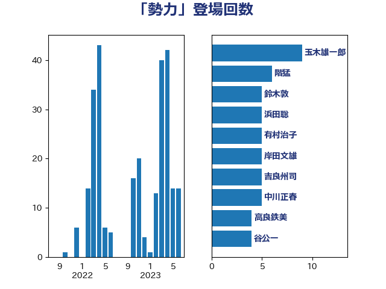

単語「勢力」

| 玉木雄一郎 | 国民民主党 | 9 回 |
| 階猛 | 立憲民主党 | 6 回 |
| 鈴木敦 | 国民民主党 | 5 回 |
| 浜田聡 | NHK党 | 5 回 |
| 有村治子 | 自由民主党 | 5 回 |
| 岸田文雄 | 自由民主党 | 5 回 |
| 吉良州司 | 無所属 | 5 回 |
| 中川正春 | 立憲民主党 | 5 回 |
| 高良鉄美 | 無所属 | 4 回 |
| 谷公一 | 自由民主党 | 4 回 |
| 牧山ひろえ | 立憲民主党 | 4 回 |
| 本庄知史 | 立憲民主党 | 4 回 |
| 山本太郎 | れいわ新選組 | 4 回 |
| 中山展宏 | 自由民主党 | 4 回 |
| 上田清司 | 国民民主党 | 4 回 |
| 鈴木庸介 | 立憲民主党 | 3 回 |
| 足立康史 | 日本維新の会 | 3 回 |
| 赤嶺政賢 | 日本共産党 | 3 回 |
| 緒方林太郎 | 無所属 | 3 回 |
| 猪口邦子 | 自由民主党 | 3 回 |
| 柴田巧 | 日本維新の会 | 3 回 |
| 枝野幸男 | 立憲民主党 | 3 回 |
| 大塚拓 | 自由民主党 | 3 回 |
| 吉良よし子 | 日本共産党 | 3 回 |
| たがや亮 | れいわ新選組 | 3 回 |
| 青柳仁士 | 日本維新の会 | 2 回 |
| 長浜博行 | 無所属 | 2 回 |
| 野田佳彦 | 立憲民主党 | 2 回 |
| 重徳和彦 | 立憲民主党 | 2 回 |
| 足立敏之 | 自由民主党 | 2 回 |
| 藤巻健太 | 日本維新の会 | 2 回 |
| 蓮舫 | 立憲民主党 | 2 回 |
| 茂木敏充 | 自由民主党 | 2 回 |
| 船田元 | 自由民主党 | 2 回 |
| 羽田次郎 | 立憲民主党 | 2 回 |
| 篠原豪 | 立憲民主党 | 2 回 |
| 空本誠喜 | 日本維新の会 | 2 回 |
| 穀田恵二 | 日本共産党 | 2 回 |
| 石井正弘 | 自由民主党 | 2 回 |
| 猪瀬直樹 | 日本維新の会 | 2 回 |
| 渡辺周 | 立憲民主党 | 2 回 |
| 泉田裕彦 | 自由民主党 | 2 回 |
| 榛葉賀津也 | 国民民主党 | 2 回 |
| 林芳正 | 自由民主党 | 2 回 |
| 杉本和巳 | 日本維新の会 | 2 回 |
| 斉藤鉄夫 | 公明党 | 2 回 |
| 徳永久志 | 無所属 | 2 回 |
| 大野敬太郎 | 自由民主党 | 2 回 |
| 大石あきこ | れいわ新選組 | 2 回 |
| 城井崇 | 立憲民主党 | 2 回 |
| 和田有一朗 | 日本維新の会 | 2 回 |
| 伊波洋一 | 無所属 | 2 回 |
| 馬場伸幸 | 日本維新の会 | 1 回 |
| 音喜多駿 | 日本維新の会 | 1 回 |
| 青島健太 | 日本維新の会 | 1 回 |
| 鈴木馨祐 | 自由民主党 | 1 回 |
| 鈴木俊一 | 自由民主党 | 1 回 |
| 道下大樹 | 立憲民主党 | 1 回 |
| 近藤昭一 | 立憲民主党 | 1 回 |
| 西村智奈美 | 立憲民主党 | 1 回 |
| 美延映夫 | 日本維新の会 | 1 回 |
| 笠浩史 | 無所属 | 1 回 |
| 稲津久 | 公明党 | 1 回 |
| 福田昭夫 | 立憲民主党 | 1 回 |
| 神谷宗幣 | 参政党 | 1 回 |
| 礒崎哲史 | 国民民主党 | 1 回 |
| 石川大我 | 立憲民主党 | 1 回 |
| 石井章 | 日本維新の会 | 1 回 |
| 石井浩郎 | 自由民主党 | 1 回 |
| 漆間譲司 | 日本維新の会 | 1 回 |
| 渡辺創 | 立憲民主党 | 1 回 |
| 浜地雅一 | 公明党 | 1 回 |
| 浅田均 | 日本維新の会 | 1 回 |
| 沢田良 | 日本維新の会 | 1 回 |
| 江藤拓 | 自由民主党 | 1 回 |
| 櫻井周 | 立憲民主党 | 1 回 |
| 櫛渕万里 | れいわ新選組 | 1 回 |
| 森英介 | 自由民主党 | 1 回 |
| 森山浩行 | 立憲民主党 | 1 回 |
| 梅谷守 | 立憲民主党 | 1 回 |
| 梅村みずほ | 日本維新の会 | 1 回 |
| 松原仁 | 立憲民主党 | 1 回 |
| 東徹 | 日本維新の会 | 1 回 |
| 杉田水脈 | 自由民主党 | 1 回 |
| 本村伸子 | 日本共産党 | 1 回 |
| 末松義規 | 立憲民主党 | 1 回 |
| 斎藤洋明 | 自由民主党 | 1 回 |
| 掘井健智 | 日本維新の会 | 1 回 |
| 平木大作 | 公明党 | 1 回 |
| 山添拓 | 日本共産党 | 1 回 |
| 小川淳也 | 立憲民主党 | 1 回 |
| 宮沢洋一 | 自由民主党 | 1 回 |
| 大塚耕平 | 国民民主党 | 1 回 |
| 塩川鉄也 | 日本共産党 | 1 回 |
| 堂故茂 | 自由民主党 | 1 回 |
| 北神圭朗 | 無所属 | 1 回 |
| 加田裕之 | 自由民主党 | 1 回 |
| 前原誠司 | 国民民主党 | 1 回 |
| 上田勇 | 公明党 | 1 回 |